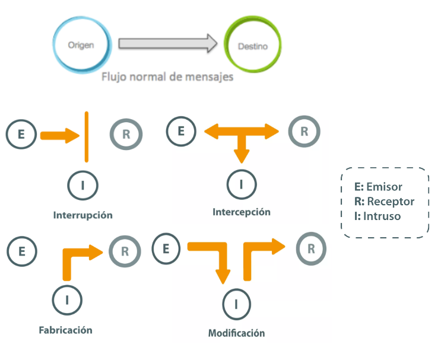
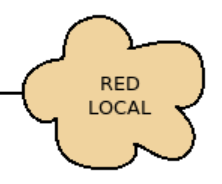
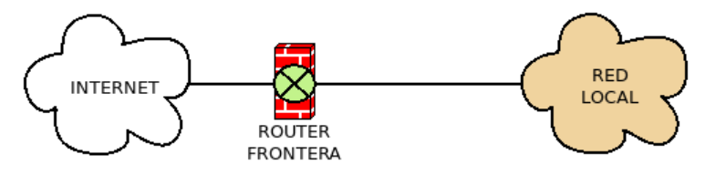
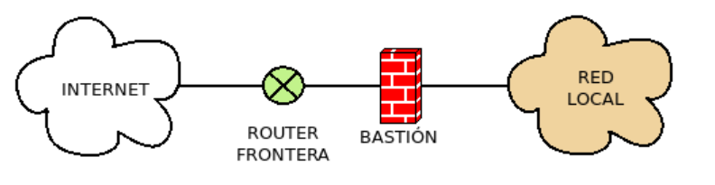
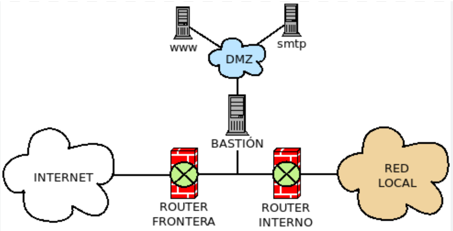
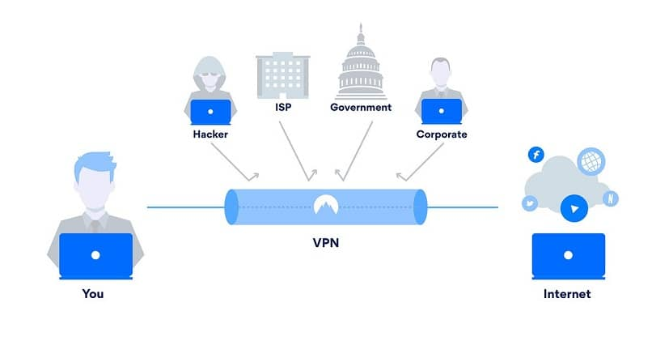
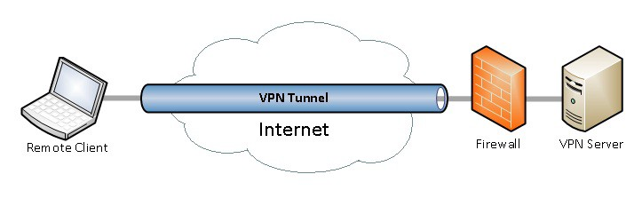

🛡️ Escenarios en los que se precisa fortificar una red interna
Fortificar una red interna en ciberseguridad es esencial cuando se quiere reducir el riesgo de que amenazas internas o externas comprometan los sistemas. Veamos algunos escenarios clave donde es necesario reforzar la seguridad de una red interna.
Presencia de datos sensibles o confidenciales
Por qué fortificar: Si un atacante accede a la red interna, podría robar información crítica como historiales médicos, datos bancarios, o secretos industriales.Medidas: Segmentación de red, cifrado de datos, control de acceso basado en roles (RBAC), DLP (Data Loss Prevention).
Amenazas internas (insider threats)
Por qué fortificar: No todos los ataques vienen de fuera; alguien con acceso legítimo puede exfiltrar datos o causar daño.Medidas: Monitoreo de comportamiento, registro de actividades (SIEM), principio de mínimo privilegio, controles de auditoría.
Acceso remoto o híbrido
Por qué fortificar: Los dispositivos remotos o conexiones VPN pueden ser puntos de entrada para atacantes si no están bien protegidos.Medidas: VPN segura, autenticación multifactor (MFA), acceso Zero Trust, análisis continuo del endpoint
Integración con terceros o proveedores
Por qué fortificar: Los accesos de terceros a la red pueden ser vectores de ataque si uno de ellos está comprometido.Medidas: Red segmentada para terceros, políticas de acceso temporal, revisión de contratos de ciberseguridad.
Incidentes recientes de malware o ransomware
Por qué fortificar: Una red que ya ha sido atacada debe reforzarse para evitar reinfecciones o movimientos laterales de los atacantes.Medidas: EDR, segmentación, listas blancas, backups aislados, políticas de respuesta a incidentes.
Expansión o reestructuración de la infraestructura
Por qué fortificar: Los cambios pueden introducir vulnerabilidades si no se gestionan bien desde el punto de vista de la seguridad.Medidas: Revisión de arquitectura, escaneo de vulnerabilidades, pruebas de penetración internas.
Alta rotación de personal o cambios frecuentes en usuarios
Por qué fortificar: Las cuentas inactivas o con permisos heredados mal gestionados son riesgos potenciales.Medidas: Gestión de identidades y accesos (IAM), procesos de onboarding y offboarding seguros, revisiones periódicas de cuentas.
Intentos de penetración
Violación de contraseñas
🔓 ¿En qué consiste una violación de contraseñas?
Es cuando un atacante logra obtener acceso ilegítimo a una base de datos o sistema que almacena contraseñas, lo que le permite acceder a cuentas o sistemas protegidos.En muchos casos, estas contraseñas terminan siendo filtradas públicamente o vendidas en la dark web.
¿Cómo se produce?
- Phishing
- Filtraciones de BBDD
- Ingenieria social
- Credenciales reutilizadas
- Fuerza Bruta o ataques de diccionario
- Malware o keyloggers
Para saber si tu contraseña ha sido filtrada, Puedes usar herramientas como: 👆👆 haveibeenpwned.com
Gestores de contraseñas que te alertan si tus datos aparecen en filtraciones
¿Cómo protegerse?
- Usa contraseñas únicas y fuertes para cada cuenta.
- Activa la autenticación multifactor (MFA) siempre que puedas.
- Cambia contraseñas tras un incidente de seguridad.
- Evita contraseñas obvias como “123456” o “admin”.
- Usa un gestor de contraseñas (como Bitwarden, 1Password, LastPass…).
- Revisa filtraciones de datos periódicamente.
Forzado de recursos
El forzado de recursos en una LAN (Local Area Network) es un tipo de ataque en ciberseguridad en el que un atacante abusivamente consume o limita los recursos de una red interna (como el ancho de banda, la capacidad de los servidores, o la disponibilidad de servicios). Esto puede causar una disminución en el rendimiento o incluso la caída total de la red. Este tipo de ataque también se conoce como "denegación de servicio" o DoS (Denial of Service) en su variante local, ya que tiene el objetivo de interrumpir la disponibilidad de servicios o sistemas en una red interna
- DoS (Denial of Service)
- DDoS (Distributed Denial of Service)
Un ataque DoS es llevado a cabo desde una sola fuente (una única máquina o servidor). El atacante utiliza un único dispositivo para enviar solicitudes o tráfico malicioso con el objetivo de interrumpir la disponibilidad de un servicio o hacer que un sistema se colapse
Un ataque DDoS es un ataque distribuido, lo que significa que proviene de múltiples dispositivos o máquinas al mismo tiempo, usualmente controlados por el atacante de manera remota (a través de una botnet, una red de dispositivos comprometidos). Debido a la distribución del ataque, el tráfico proviene de muchas fuentes diferentes, lo que hace que sea mucho más difícil de mitigar
Backdoors y Exploits
Un backdoor es una vulnerabilidad oculta o un método secreto que permite a un atacante acceder a un sistema sin ser detectado, eludiendo los mecanismos de seguridad como contraseñas o autenticación. Es como una puerta trasera que permite la entrada sin pasar por los filtros normales de seguridad.
Un exploit es una técnica o código que aprovecha una vulnerabilidad o debilidad en un software, sistema operativo o aplicación para realizar acciones no autorizadas. En otras palabras, un exploit aprovecha una falla de seguridad para obtener acceso no autorizado o ejecutar comandos maliciosos
Tipos de ataques a LAN

Interrupción
Producen una falta de disponibilidad. Ejemplos: Destrucción de HW, Borrado de programas y datos, fallos del sistema, DoS, DDoS
Interceptación
Se consigue acceder a recursos para los cuales no se tiene acceso/permiso. Ejemplo: Sniffing
Fabricación (o suplantación)
Un atacante consigue introducir objetos o datos falsificados en el sistema, atentando contra la autenticidad de la información. Ejemplo: Spoofing
Modificación
Manipula información autentica convirtiendola en falsa, (pareciendo ser autentica). Ejemplo: Pharming, redirigir a otra web o dominio falso y fraudulento
Zonas de riesgo en una LAN
En una LAN (Red de Área Local), la clasificación de las zonas de riesgo es crucial para comprender las áreas más vulnerables a los ataques cibernéticos. Las zonas de riesgo son áreas dentro de la infraestructura de la red donde existen mayores probabilidades de que ocurran incidentes de seguridad o donde el impacto de un ataque podría ser más grave. Clasificar estas zonas ayuda a aplicar las medidas de seguridad adecuadas y a gestionar mejor los riesgos
- Zona de Acceso (Perímetro de la Red)
- Zona DMZ (Zona Desmilitarizada)
- Zona Interna (Red Corporativa o Privada)
- Zona de Proveedores y Socios (Red Externa Controlada)
- Zona de Comunicaciones Inalámbricas (Wi-Fi)
- Zona de Backup y Almacenamiento de Datos Sensibles
| Zona de Riesgo | Descripción | Riesgos Principales | Medidas de Seguridad |
|---|---|---|---|
| Zona de Acceso (Perímetro) | Puertos de entrada y dispositivos de acceso a la red | Ataques de intrusión, DDoS, mala configuración de dispositivos | Filtros de tráfico, IDS/IPS, segmentación de red |
| Zona DMZ | Servidores accesibles desde el exterior (web, correo, etc.) | Ataques a servidores, movimiento lateral | Segmentación, actualización de software, firewalls |
| Zona Interna (Red Privada) | Equipos y servidores dentro de la red corporativa | Acceso no autorizado, malware, escalada de privilegios | Control de acceso, segmentación, monitoreo continuo |
| Zona de Proveedores/Partners | Dispositivos externos conectados con la red interna | Malware, acceso no autorizado desde proveedores | VPN, restricciones de acceso, monitoreo de tráfico |
| Zona Wi-Fi | Red inalámbrica accesible por dispositivos móviles o portátiles | Intercepción de tráfico, ataques man-in-the-middle | Cifrado WPA3, autenticación 802.1X, monitoreo de tráfico |
| Zona Backup/Almacenamiento | Sistemas de respaldo y almacenamiento de datos críticos | Robo o destrucción de datos, acceso no autorizado | Cifrado de backups, acceso restringido, monitoreo de integridad |
Elementos básicos en la seguridad perimetral
- Perímetro de red: es el límite entre la red interna segura de una organización e Internet, o cualquier otra red externa no controlada.
El perímetro de la red es el límite de lo que una organización controla. - Enrutador/Router de frontera: dispositivos situados entre la red interna y las redes de otros proveedores que intercambian tráfico con nosotros.
- Bastión: sistema que actúa como intermediario entre los usuarios de la red interna de una organización y otro tipo de redes. Esta máquina debe estar especialmente asegurada, pero en principio es vulnerable a ataques por estar expuesta a Internet; generalmente proporciona un solo servicio (como por ejemplo un servidor proxy).
- DMZ: es una subred de área local situada entre la red privada de una organización (LAN) y la red externa (WAN), normalmente Internet. Su objetivo es proteger la red interna permitiendo que ciertos servicios públicos sean accesibles desde Internet sin exponer directamente los sistemas internos.




En la DMZ suelen ubicarse servidores que deben ser accesibles desde Internet, por ejemplo: Servidor web (HTTP/HTTPS), Servidor de correo, Servidor DNS, etc.
Protocolos seguros de comunicación
Los protocolos seguros de comunicación son esenciales para garantizar la confidencialidad, integridad y autenticidad de los datos que se transmiten a través de redes, ya sea en una LAN (Red de Área Local) o en una WLAN (Red de Área Local Inalámbrica). Veamos algunos de los protocolos más utilizados y seguros en estos contextos.
Protocolos para LAN (Red de Área Local)
- HTTPS (Hypertext Transfer Protocol Secure). Puerto 443
- SSH (Secure Shell) . Puerto 22
- SMB (Server Message Block) con SMBv3. Puerto 445
- IPSec (Internet Protocol Security). Puertos 500, 50 y 51. +detras de un NAT , puerto 4500
- VLAN (Virtual LAN) con 802.1X. Puertos del switch en modo : acceso, troncal, hibrido
- SFTP (SSH File Transfer Protocol). Puerto 22. Funciona sobre SSH
- FTPS (FTP Secure). Puertos 21 y puertos dinámicos para datos. FTP protegido mediante TLS.
- SNMPv3. Puerto UDP 161/162
- LDAPS (LDAP sobre TLS). Puerto 636. Se usa para acceso seguro a directorios como Microsoft Active Directory.
- RDP con TLS y NLA (Network Level Authentication). Puerto 3389. Acceso remoto seguro a equipos Windows.
- Syslog sobre TLS. Puerto 6514. Permite enviar registros de forma cifrada.
- DNS over TLS (DoT). Puerto 853. Cifra las consultas DNS.
- DNSSEC. No cifra el tráfico, pero protege la integridad y autenticidad de las respuestas DNS.
- Otros ...
Protocolos para WLAN (Red de Área Local Inalámbrica)
- WPA3 (Wi-Fi Protected Access 3)
- WPA2 (Wi-Fi Protected Access 2)
- PKI
- Enterprise
- RADIUS. Puertos UDP 1812 y 1813. Autenticación centralizada para 802.1X, VPN, Wi-Fi, etc.
- Kerberos. Puerto TCP/UDP 88. Protocolo de autenticación muy usado en dominios Windows.
- WEP: Antiguo y muy inseguro hoy en dia. No se recomenda su uso
VPN

Que es una VPN
Una VPN (siglas de Virtual Private Network o Red Privada Virtual) es una tecnología que crea una conexión segura y cifrada entre tu dispositivo (computadora, teléfono, tablet, etc.) y una red, generalmente Internet. Es como un túnel privado por el que viajan tus datos, protegidos de miradas externas
Para que sirve una VPN
Una VPN tiene varios usos importantes:
- Privacidad y seguridad: Protege tu conexión en redes públicas (como Wi-Fi en cafeterías o aeropuertos) para que nadie pueda espiar lo que haces.
- Ocultar tu IP y ubicación: Cambia tu dirección IP, lo que puede ayudarte a navegar de forma anónima.
- Acceder a contenido restringido: Puedes “simular” que estás en otro país para ver contenido bloqueado en tu región (como Netflix de otro país).
- Acceso remoto: Empresas usan VPN para que sus empleados accedan de forma segura a la red corporativa desde casa o viajes.
- Evitar censura: En algunos países con restricciones de Internet, las VPN permiten el acceso a sitios bloqueados.

Tipos de VPN
- VPN de acceso remoto o Road Warrior o Dial-Up ⤷ Permite a los usuarios conectarse a una red privada desde cualquier lugar. Ideal para trabajadores remotos
- VPN de sitio a sitio (Site-to-Site) ⤷ Conecta redes completas entre oficinas, por ejemplo, la sede principal y una sucursal. Se usa mucho en empresas
- VPN personal (o de acceso anónimo) ⤷ Son las que usamos los usuarios normales para proteger nuestra conexión o cambiar de ubicación
- VPN over LAN ⤷ El tunel se establece entre equipos dentro de la red local. Sirve para aislar zonas y servicios de la red interna
¿Cómo se configura un cliente VPN?
Paso 1: Obtener los datos de la VPN
Se Necesita:- Dirección del servidor VPN (ej: vpn.empresa.com)
- Tipo de VPN (PPTP, L2TP/IPSec, OpenVPN, etc.)
- Nombre de usuario y contraseña
- A veces una clave secreta o certificado
Paso 2: Configurarla en el sistema
En Windows 10/11:- Ve a Configuración > Red e Internet > VPN.
- Haz clic en "Agregar una conexión VPN".
- Llena los datos:
- Proveedor VPN: "Windows (integrado)"
- Nombre de la conexión: (un nombre que recuerdes)
- Nombre o dirección del servidor: el que te hayan dado
- Tipo de VPN: (elige según el que uses: L2TP, PPTP, etc.)
- Método de inicio de sesión: usuario/contraseña o certificado
- Guardas y luego haces clic en "Conectar".
Si es una VPN con archivo de configuración (como OpenVPN):
- Descarga el cliente OpenVPN.
- Importa el archivo .ovpn que te dé tu proveedor o empresa.
- Inicia la conexión desde ahí.
Configuración de VPN a Distintos Niveles
🔸 Nivel de Enlace de Datos (Capa 2)
¿Qué hace? Establece una VPN entre interfaces de red como si estuvieran en la misma red física local (LAN), usando técnicas como túneles Ethernet.
Protocolos comunes: L2TP, PPTP, GRE
Configuración típica: Se configura en routers o firewalls, también en Linux con herramientas como ip link o Open vSwitch.
Ejemplo: Una sede remota conectada como si estuviera en la LAN principal.
🔸 Nivel de Red (Capa 3)
¿Qué hace? Encapsula paquetes IP y los redirige por un túnel cifrado.
Protocolos comunes: IPSec, WireGuard, OpenVPN, SSTP
Configuración típica:
- Instalar un cliente VPN como OpenVPN, WireGuard, Cliente nativo en Windows .
- Configurar con IP del servidor, Tipo de protocolo, claves o certificados.
Ejemplo: Acceder a la red de una empresa desde casa.
🔸 Nivel de Aplicación (Capa 7)
¿Qué hace? Solo protege el tráfico de aplicaciones específicas, no de todo el sistema.
Protocolos comunes: SSH Tunneling, HTTPS Proxy
Configuración típica:
ssh -L 8080:localhost:80 usuario@servidorEsto redirige el puerto 8080 local al 80 del servidor remoto.
Ejemplo: Redirigir solo el navegador mediante un túnel SSH.
Comparación Rápida
| Nivel | Alcance | Protocolo | Uso común |
|---|---|---|---|
| Enlace (Capa 2) | Red local extendida | L2TP, GRE | Oficinas remotas |
| Red (Capa 3) | Todo el tráfico IP | IPSec, WireGuard | VPN personal/corporativa |
| Aplicación (Capa 7) | App específica | SSH, Proxy, Tor | Acceso puntual y ligero |
Protocolos
- OpenVPN. Habitualmente UDP 1194. VPN basada en TLS.
- WireGuard. Habitualmente UDP 51820. VPN moderna con criptografía integrada.
- Otros ....
⚡ Servidores de acceso remoto (pasarela)
¿Qué es un servidor de acceso remoto?
Un servidor de acceso remoto es un equipo o servicio que permite a los usuarios conectarse y usar recursos de una red o sistema desde otro lugar, es decir, a distancia, como si estuvieran físicamente presentes.
¿Para qué sirven?
- Acceder a archivos y aplicaciones de una oficina desde casa.
- Controlar computadoras o servidores de forma remota.
- Conectarse de forma segura a redes privadas (por ejemplo, la red de tu empresa).
- Dar soporte técnico sin estar físicamente en el lugar.
¿Cómo funciona?
- El servidor está configurado para aceptar conexiones remotas mediante un protocolo.
- El cliente (usuario) usa un programa o aplicación para iniciar sesión.
- El servidor autentica al usuario (usando contraseña, certificado, etc.).
- Se establece una conexión cifrada (normalmente).
- El usuario puede entonces:
- Controlar el escritorio del servidor.
- Ejecutar aplicaciones.
- Acceder a archivos, impresoras, bases de datos, etc.
Tipos de servidores de acceso remoto (según protocolo o función)
| Tipo | Protocolo / Tecnología | ¿Qué hace? |
|---|---|---|
| RDP (Remote Desktop Protocol) | Microsoft RDP | Te da acceso al escritorio remoto de una máquina Windows. |
| SSH (Secure Shell) | Protocolo SSH | Permite acceder a servidores Linux o Unix a través de terminal (modo texto). |
| VPN | OpenVPN, IPSec, WireGuard | Conecta a una red privada como si estuvieras dentro de ella. |
| VNC (Virtual Network Computing) | VNC | Permite control remoto gráfico entre distintos sistemas operativos (más básico que RDP). |
| Citrix / VMware Horizon | Escritorio virtual | Proporciona un escritorio completo alojado en servidores, ideal para entornos corporativos. |
| FTP/SFTP/SMB | Protocolos de archivo | Acceso remoto a archivos compartidos y directorios de red. |
Ejemplo práctico: Acceder al escritorio de una PC desde casa
- En la oficina, configuras una computadora como servidor RDP (Windows).
- En casa, abres el cliente de Escritorio Remoto y escribes la IP o el nombre del equipo.
- Inicias sesión con tu usuario y contraseña.
- Aparece el escritorio remoto como si estuvieras frente al PC de la oficina.
Seguridad en el acceso remoto
Es muy importante que los servidores de acceso remoto estén protegidos adecuadamente, porque exponen puntos de entrada a la red:
- Usar conexiones cifradas (RDP sobre VPN, SSH, etc.)
- No dejar puertos abiertos innecesariamente (como el 3389 para RDP)
- Autenticación multifactor (MFA)
- Permitir acceso solo desde IPs confiables
Protocolos de autenticacion por pasarela
¿Qué es la autenticación por pasarela?
Una pasarela de autenticación (authentication gateway) es un punto de control entre el usuario y un recurso protegido (como una red, app o servidor). Su función es verificar la identidad del usuario antes de permitir el acceso.
👉 Imagina que es como un guardia de seguridad en la entrada de un edificio: te pide tus credenciales y, si todo está en orden, te deja pasar.
Estas pasarelas suelen usar protocolos de autenticación estandarizados para integrar usuarios de diferentes sistemas o redes (por ejemplo, para permitir acceso a usuarios de Google, Microsoft o LDAP).
¿Dónde se usa?
- En VPNs corporativas
- Portales cautivos (como los de WiFi públicos)
- Acceso a aplicaciones web empresariales
- Single Sign-On (SSO)
- Firewalls con control de identidad
¿Qué es AAA?
AAA son las siglas de:
- Autenticación (Authentication)
- Autorización (Authorization)
- Contabilidad (Accounting)
Tecnologías relacionadas
| Componente | Ejemplos de tecnologías |
|---|---|
| Autenticación | LDAP, Kerberos, OAuth, SAML, RADIUS |
| Autorización | ACLs, Roles RBAC, Políticas de acceso |
| Contabilidad | RADIUS Accounting, logs de sistema, SIEM |
Es un modelo de seguridad que se utiliza para controlar quién entra, qué puede hacer, y qué ha hecho dentro de un sistema, red o servicio.
Protocolos de autenticación comunes (por pasarela)
| Protocolo | ¿Qué hace? | Usos comunes |
|---|---|---|
| PAP (Password Authentication Protocol) | Envía el usuario y la contraseña en texto plano. | Muy básico, ya casi no se usa por razones de seguridad. |
| CHAP (Challenge-Handshake Authentication Protocol) | Usa un reto y respuesta hash para evitar enviar la contraseña directamente. | VPN antiguas, autenticación básica sin cifrado fuerte. |
| EAP (Extensible Authentication Protocol) | Protocolo flexible que permite múltiples métodos (certificados, contraseñas, tarjetas, etc.). | WPA/WPA2 Enterprise, VPNs modernas, redes WiFi seguras. |
| RADIUS | Autenticación centralizada, usada por pasarelas, VPNs, switches, WiFi, etc. | Empresas, universidades, redes corporativas. |
| TACACS+ | Similar a RADIUS pero más detallado y enfocado a dispositivos de red. | Redes Cisco, switches, firewalls. |
| SAML (Security Assertion Markup Language) | Permite SSO entre servicios web. Usa tokens XML firmados. | Aplicaciones web corporativas, acceso federado. |
| OAuth2 / OpenID Connect | Delegan la autenticación en un proveedor externo (Google, Facebook, Azure, etc.). | SSO moderno para apps web, móviles y APIs. |
¿Cómo funciona en la práctica?
- El usuario intenta acceder a un recurso (una red, web, etc.).
- La pasarela redirige al usuario a una interfaz de login (local o de un proveedor externo).
- Se verifica la identidad (mediante uno de los protocolos anteriores).
- Si es válido, se genera un token o sesión y se permite el acceso.
Ejemplo real: autenticación en una red WiFi empresarial (802.1X)
- El usuario se conecta al WiFi.
- El switch o AP envía una solicitud EAP al servidor RADIUS.
- El servidor valida las credenciales (usuario y contraseña o certificado).
- Si es correcto, se permite el acceso a la red.
Ejemplo real: autenticación delegada (ejemplo:google)
Tecnologías que usa
OAuth 2.0: , OpenID Connect (OIDC):
Configurar pasarela con un serv remoto autenticacion
Practica
Practica
Falta colocar aqui enunciados de prácticas
Altres Recursos
Falta colocar aqui el test de este RA